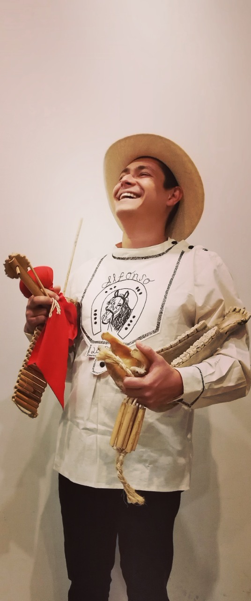
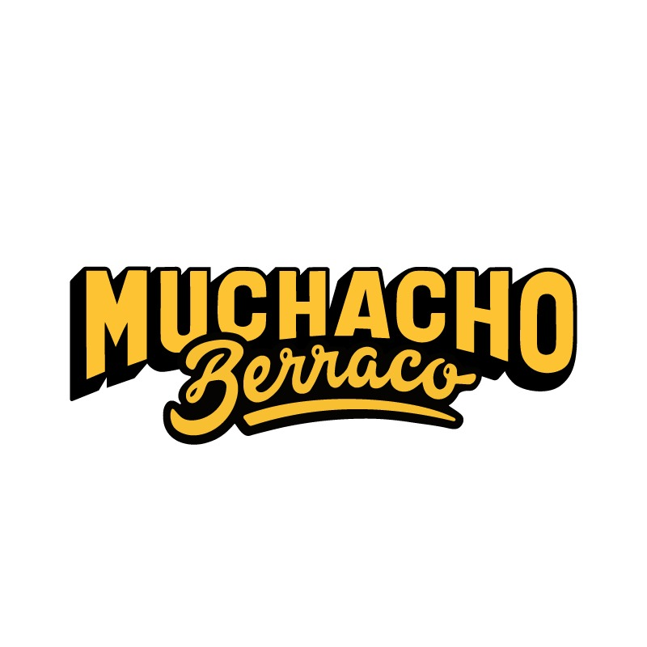

TIPLE

César Andrés Castro Mora
Maestro en música con énfasis en músicas populares y tiple, de la Universidad Autónoma de Bucaramanga, actualmente se desempeña como arreglista de la Orquesta de Cuerda pulsadas de Santander y Docente del área de Musicas tradicionales de la Esacuela Municipal de Artes de Bucaramanga. Ha realizado presentaciones en certámenes nacionales e internacionales entre los que se destacan el XI Encuentro Nacional del Tiple, Cortiple realizado en Envigado, Antioquia, teatro mayor Julio Mario Santo Domingo, Auditorio Luis A. Calvo en la ciudad de Bucaramanga, teatro Tolima, Teatro Colón en la ciudad de Bogotá, sala de conciertos de la biblioteca Luis ángel Arango, instituto Cervantes de la ciudad de Sao Paulo en Brasil, Festival Internacional de músicas folclóricas en Cosquin Argentina y festival internacional de clarinetes del Paraguay.
PIANO Y SYNTH

Jhon Fernando Huérfano Patiño
Músico de la ciudad de Bucaramanga, pianista y compositor de música jazz. Ha participado en diferentes agrupaciones como Diego Prada jazz trio, Real band, Djazz Collective. Ha participado en talleres musicales con artistas como mark levine, Jonathan kreisberg, aaron golberg, will vinson, sam yahel, entre otros. Fue alumno del maestro blas Emilio atehortúa. Actualmente líder del grupo Elastic band de Bucaramanga, con el que ha podido participar en festivales de jazz llevados cabo en ciudades como Bogotá, pamplona y el Catatumbo.
CONTRABAJO

Juan Sebastián Palomino Tapias
Bumangués, egresado de la UNAB, bajista y contrabajista quien ha tenido la oportunidad de participar en diferentes proyectos de diversos géneros, presentándose en festivales como el Festival de jazz de Villa de Leva – VillaJazz Fest, el Festival de la Tigra en Piedecuesta Santander y en la franja Suena Chicamocha del Teatro Santander entre otros, músico de Sesión prolijo, cualidad que le ha permitido manejar géneros como el Reggae, el rock y el jazz, a su vez se desempeña como profesor de música en campos como el bajo eléctrico ,guitarra y ensambles de jazz y rock.
> BATERÍA Y PERCUSIÓN ANDINA SANTANDEREANA
Jovan Alfonso Arévalo Espinosa
Artista gráfico:
@GEROARRIETA
Estudio de grabación:
Expe STUDIOS

Desarrollo web:
Sebastián Camilo Nieto Camacho
Ingeniero de Sistemas snietoc@unbosque.edu.co